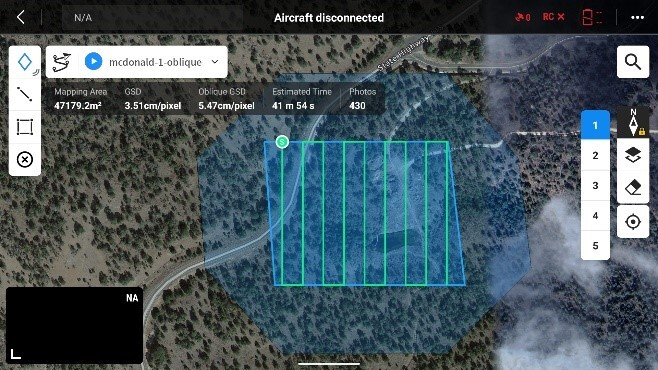

Unmanned Aerial Drone Operations¶
Fort Davis-McDonald Observatory Field Research Trip¶
Federal Aviation Administration (FAA) Preparations¶
The FAA defines an Unmanned Aircraft System (UAS) as an unmanned aircraft and all associated support equipment, control station, data links, telemetry, communications, and navigation equipment necessary to operate the unmanned aircraft. In simpler terms, it refers to any aircraft operated without a human pilot on board, controlled remotely or autonomously. This includes drones, quadcopters, and other similar unmanned aircraft.
Securing an FAA Remote Pilot Certificate is mandatory to operate your drone commercially within the United States under the Small UAS Rule (Part 107). This entails successfully passing a knowledge test, illustrating your comprehension of FAA regulations, airspace categorization, operational prerequisites, the weather's impact on drone flight, and other fundamental elements of safe drone operation. This certification stands as a vital measure to guarantee airspace safety and protect other aircraft, people, and property.
General Steps for Obtaining a Remote Pilot Certificate¶
Self-Study. Test preparation courses for pay are available, but anyone with an aviation background or previous flight training can self-study using the reference, “FAA Remote Pilot Study Guide” located here:
Other references recommended by the FAA, as revisions were made on April 21, 2021 to 14 CFR part 107 and a new 14 CFR part 89 for three new topics covered on the revised Unmanned Aircraft General (UAG) airman knowledge test: 1. Operations Over People 2. Remote Identification 3. Night Operations
The new topics listed above will be added to the existing topic list: 4. Applicable regulations relating to small, unmanned aircraft system rating privileges, limitations, and flight operation 5. Effects of weather on small, unmanned aircraft performance 6. Small unmanned aircraft loading and performance 7. Emergency procedures 8. Crew resource management 9. Determining the performance of small, unmanned aircraft 10. Maintenance and preflight inspection procedures
- These changes will have a direct effect on airman knowledge testing for a Remote Pilot Certificate with a Small Aircraft Rating. Remote Pilot – Small Unmanned Aircraft Systems Airman Certification Standards (FAA-S-ACS-10B)
- Federal Register Vol. 86, No. 10, Operation of Small Unmanned Aircraft Systems Over People (Note: All new knowledge test questions were drafted from the rule only, beginning on page 68.)
- Federal Register Vol. 86, No. 10, Remote Identification of Unmanned Aircraft (Note: All new knowledge test questions were drafted from the rule only, beginning on page 116.)
- AC 107-2A, Small Unmanned Aircraft System (Small UAS)
- Pilot’s Handbook of Aeronautical Knowledge (FAA-H-8083-25B) Chapter 17: Aeromedical Factors (Note: Applicable information found on pages 22 through 27 (pages 17-22 through 17-27 in full version of the handbook).)
- Get your FAA Tracking Number (FTN).You will need to have your FTN prior to scheduling and registering for any FAA Airman Knowledge Test scheduled on or after January 13, 2020.
Find a Test Center. There are approximately 7,000 contracted testing centers throughout the United States. The testing supplement is called, “Airman Knowledge Testing Supplement for Sport Pilot, Recreational Pilot, Remote Pilot, and Private Pilot.” This supplement can help with practice tests.
Apply for your Certificate. IACRA Application -- FAA's pilot management system. This is where you apply for your Part 107 Remote Pilot certificate (a nice checklist from an independent source).
The exam fee is $175.00, the passing standard is 70 percent, and according to the FAA the pass rate was 85.68 percent in 2022, with an average score of 80.31 percent. The FAA will issue a temporary certificate in 10-15 business days and mail the permanent wallet license in 4-6 weeks. The temporary certificate must be in the pilot’s possession while flying, until the permanent certificate arrives.
FAA Part 107 Authorizations and Business/Private Flight Permissions¶
The FAA mandates that pilots adhere to Part 107 authorizations, which encompass essential checks like airspace assessments, weather evaluations. These requirements are crucial components of safe and responsible drone operation for commercial purposes. By conducting airspace checks, pilots ensure they are aware of any restrictions or regulations governing the area where they intend to fly. Similarly, performing weather checks allows pilots to assess conditions that could affect flight safety, such as high winds, precipitation, or low visibility, and other risk evaluations.
Drone Registration¶
Drone registration with the Federal Aviation Administration (FAA) is mandatory for all drones weighing between 0.55 pounds (250 grams) and 55 pounds (approximately 25 kilograms) that are operated outdoors in the United States for recreational or commercial purposes. This registration requirement is in place to help ensure accountability and safety in the national airspace system. Failure to register your drone can result in penalties and fines.
To register your drone with the Federal Aviation Administration (FAA) in the United States, follow these steps:
- Create an Account: Visit the FAA's official drone registration website. If you do not already have an account, you will need to create one.
- Provide Information: Once logged in, you will be prompted to provide information about yourself and your drone. This typically includes your name, address, email, and details about your drone, such as its make, model, and serial number.
- Pay Registration Fee: There is a registration fee required by the FAA at $5.00 for each drone registration and is valid for three years. You will need to pay this fee using a credit or debit card.
- Receive Registration Number: After completing the registration process and payment, you will receive a unique registration number for your drone. This number must be affixed to your drone in a visible location.
- Keep Proof of Registration: It is essential to keep proof of registration with you whenever you are operating your drone. This can be a digital or printed copy of your registration certificate.
- Renew Registration: Remember to renew your drone registration every three years to maintain compliance with FAA regulations.
- Review Regulations: Familiarize yourself with the FAA's regulations for drone operation, including airspace restrictions, altitude limits, and any other requirements specific to your location or type of drone activity.
Airspace Preflight Check¶
The FAA also directs pilots to use LAANC (Low Altitude Authorization and Notification Capability) for obtaining authorization to fly drones in controlled airspace. LAANC is an automated system that enables drone operators to request and receive near real-time authorization to fly in airspace where air traffic control services are provided. By utilizing LAANC, pilots can efficiently obtain the necessary permissions to operate their drones safely within controlled airspace while ensuring compliance with FAA regulations. This streamlined process enhances airspace safety by providing operators with timely authorization and minimizing potential conflicts with crewed aircraft.
Additionally, for government and public safety entities, FAA issues Certificates of Authorization (COA) allowing them to operate drones for specific purposes, such as law enforcement, search and rescue, or research.
Business and Private Owner Flight Permissions¶
Overall, communication and collaboration with property owners are key to ensuring safe and lawful drone flights over both business and private properties. By obtaining necessary permissions and adhering to regulations, drone pilots can conduct their operations responsibly while minimizing potential conflicts or concerns. This approach fosters a positive relationship between drone operators and the communities they serve while ensuring respect for property rights and privacy considerations.
Equipment¶
The primary drone-related equipment for the research field study included: - DJI Mavic 3 Multispectral drone: The Mavic 3M is a professional-grade drone designed for agricultural applications and environmental monitoring. It combines the advanced flight capabilities of the DJI Mavic series with a multispectral imaging system, allowing users to capture detailed data for crop health analysis, vegetation mapping, and other specialized tasks. Our study collected orthophotos for change detection, and oblique photos to assist in damage assessments.
Key features of the DJI Mavic 3 Multispectral include: Multispectral Camera: The drone is equipped with a specialized multispectral camera that captures images across multiple wavelengths of light, including visible and non-visible spectra such as near-infrared. This enables precise analysis of plant health, chlorophyll levels, and other vegetation characteristics. Multispectral Camera
- Image Sensor
- 1/2.8-inch CMOS, effective pixels: 5 MP
- Lens
- FOV: 73.91° (61.2° x 48.10°)
- Equivalent focal length: 25 mm
- Aperture: f/2.0
- Focus: Fixed Focus
- Multispectral Camera Band
- Green (G): 560 ± 16 nm;
- Red (R): 650 ± 16 nm;
- Red Edge (RE): 730 ± 16 nm;
- Near infrared (NIR): 860 ± 26 nm;
- Gain Range
- 1x-32x
- Shutter Speed
- Electronic Shutter: 1/30~1/12800 s
- Max Image Size
- 2592×1944
- Image Format
- TIFF
- Video Format
- MP4 (MPEG-4 AVC/H.264)
- Photo Shooting Mode
- Single shot: 5 MP
- Timelapse: 5 MP
- TIFF: 2/3/5/7/10/15/20/30/60 s
- Video Resolution
- H.264
- FHD: 1920 x 1080@30fps
- Video content: NDVI/GNDVI/NDRE
- Max Video Bitrate
- Stream: 60 Mbps
High-Resolution Imaging: The multispectral camera captures high-resolution imagery with detailed spectral information, allowing for accurate and comprehensive data analysis. Mapping Software with DJI Terra, or open source: The DJI Mavic 3 Multispectral is compatible with DJI Terra, a mapping and analysis software platform. Users can easily process and analyze the data captured by the drone to generate maps, 3D models, and actionable insights. Open-source software used in our project included OpenDroneMap ( https://opendronemap.org/ ), which provides solutions for collecting, processing, analyzing, and displaying aerial data. Flight Performance: Like other drones in the DJI Mavic series, the Mavic 3 Multispectral offers advanced flight performance and stability, with features such as obstacle avoidance, intelligent flight modes, and extended flight time. Compact and Portable Design: Despite its advanced capabilities, the Mavic 3 Multispectral maintains a compact and portable design, making it easy to transport and deploy in the field.
- RC Pro Enterprise Remote Controller. A remote controller, often referred to as a transmitter or transmitter controller, is used to control the drone's flight. It communicates wirelessly with the drone and allows the pilot to maneuver the aircraft, adjust its altitude, speed, and orientation, and control any onboard cameras or other features. Using the Pilot 2 software, mission planning was developed that enabled automated flight modes and detailed configurations.
Smartphone: Prior to launch and where data services were available, a cell phone was used to check airspace and weather advisories, and recent or current weather observations.
Batteries and Charger: Drones are powered by rechargeable batteries, so our team purchased three extra batteries (four total) and a charger. This was essential for extending flight time and ensuring uninterrupted operation during longer sessions. Each battery is rated for 43 min maximum flight time; however, windy conditions will reduce this time due to extra motor throttling to maintain flight attitude, altitude, and stability.
Safety Equipment: Safety equipment such as a fire extinguisher, first aid kit, and high-visibility vest may be necessary, especially for commercial drone operations or flights in remote areas. We also brought sunglasses and sunscreen due to the sunny conditions.
Accessories: We had various accessories like spare propellers, drone carrying case, USB cable, adapter and microSD card case and landing pad. Lens filters are an option, and can be important for convenience, protection, and enhancing the capabilities of the drone image and video capture.
Personal Protective Equipment (PPE): Depending on the nature of the flight operations, personal protective equipment such as gloves, safety glasses, and a helmet may be necessary, particularly when flying in challenging or hazardous environments.
Flight Training¶
The drone pilot for this research study had previously logged fixed wing and drone flight time but needed to become familiar with the DJI systems and configurations. Piloting any type of aircraft requires ongoing practice which can include both simulator training and real-world flying. Periodic check rides or practical flight tests by seasoned pilots are recommended, but not required for drones.
Drone flight training is essential for aspiring pilots to develop the skills and knowledge necessary for safe and effective drone operation. Proper training not only enhances flight proficiency but also instills a strong understanding of regulations, airspace requirements, and emergency procedures.
During drone flight training, pilots learn and hone their skills in fundamental flight maneuvers, navigation techniques, and best practices for various scenarios. They also become familiar with the features and capabilities of their specific drone model. Training programs often cover topics such as weather effects on flight, airspace classification, and privacy considerations.
Pre-Flight Checklist¶
One crucial aspect emphasized in drone flight training and day-to-day operations, is the importance of a pre-flight checklist. A pre-flight checklist is a systematic process that ensures all necessary steps are taken before each flight, reducing the risk of errors or oversights that could compromise safety.
DJI includes a pre-flight checklist in its user manual (pg 31). This is the general checklist for most DJI drones:
- Pre-flight Inspection:
- Remove gimbal protector before starting aircraft, otherwise damage to the camera system may occur.
- Check the drone for any physical damage, including the body, propellers, and landing gear.
- Ensure all components are securely attached.
- Ensure micro-SD card is inserted and the card slot cover is closed.
- Battery Check:
- Confirm that the battery is fully charged and properly inserted into the drone.
- Check the battery status indicators.
- Controller Check:
- Power on the remote controller and drone, and ensure it is paired with the drone.
- Check signal strength and Pilot 2 controller parameters, especially terrain avoidance and return to home (RTH) settings.
- GPS and Compass Calibration:
- Verify GPS connectivity and perform a compass calibration if necessary.
- Camera and Gimbal Check:
- Ensure the camera and gimbal are securely attached and functioning properly.
- Check camera settings and focus.
- Flight Mode and Settings:
- Select the appropriate flight mode for your mission.
- Load your flight plan if relevant.
- Review and adjust flight settings as needed.
- Obstacle Avoidance System:
- Verify that obstacle avoidance sensors are functioning correctly.
- Check sensor status indicators.
- Propeller Check:
- Inspect propellers for damage and ensure they are securely attached.
- Weather Conditions:
- Check weather forecasts and assess wind speed, precipitation, and visibility.
- Ensure conditions are suitable for safe flight.
- Emergency Procedures:
- Review emergency procedures, such as initiating return-to-home (RTH) or manual landing.
- Ensure familiarity with emergency features and actions that may need to be taken.
Field Training Exercise (FTX)¶
03/04/2024, Long Canyon near Emma Long Metropolitan Park, Austin, Texas
The objectives were to test all equipment prior to the Fort Davis field study. The drone pilot logged his first flights with the Mavic 3M and manually flew over a creek and residential home while taking video and multispectral images. The first stages of learning how to configure an automated flight route began, but there were a few critical settings and other technical roadblocks preventing the drone from taking off. These issues were troubleshot and solved in the first few days at Fort Davis.
Lessons Learned¶
The Fort Davis Field Study from March 18-22, 2024, had many positive moments, most of which were preceded by numerous challenges. Some of the problems just needed to be solved, while other troubles could only be mitigated to some degree. Also, some of the lessons learned simply highlighted the need for additional training and familiarization, as the equipment was purchased only a month or so prior to the field study.
RC Pro Controller User Interface / User Experience (UI/UX)¶
Next Button. The preflight check screen can be viewed whether the drone is on or off. When the drone is off, this screen is fixed with no scrolling. This was the norm, as the controller was studied in this state a lot before ever flying it. However, when the drone is running, the controller begins receiving data and populates numerous empty cells in the UI. Additionally, a new button appears on the screen, but it appears below the static screen UI and a thin scroll bar appears on the right margin. There is a button labeled, “Next,” which is only seen if you know to scroll down. This is what was initially missed at the earlier FTX which brought the automated flight plan to a halt. A very rudimentary step, but easily missed on day-1 with little familiarization. See figure 1.
 Figure 1. Screenshot of Preflight Check UI with drone off. No Next button.
Figure 1. Screenshot of Preflight Check UI with drone off. No Next button.
Max Altitude. The setting for Max Altitude in the Flight Controller Settings became an issue due to the higher elevation in West Texas (5,000 – 6,800 ft MSL) when compared with Austin, Texas (780 ft MSL). This setting had to be increased to 500 ft for the drone to take off when flying an automated flight route. At the time, this was not fully understood, because the working setting was still below ground level compared with mean sea level (MSL) elevation. Later it was realized that the drone has an altimeter (aviation barometer), and at takeoff the drone altimeter height is reset to zero feet above ground level (AGL), or height relative to the surface. So, the earlier, lower max height values allowed manual flight at the lower flight levels, and once the system needed to cross check settings against the flight plan, the higher flight levels in the plan (ex. 390 ft) created a dependency and forced the higher max height setting. See Figure 2.
 Figure 2. Flight Controller Settings. Max Altitude and Max Flight Distance
Geofencing. We wanted to create a custom geofence that would keep the drone out of specific geographic areas, however after much reading it was discovered that the Mavic 3M does not have a custom geofence capability. DJI Mavic 3 drones are equipped with built-in geofencing technology to enhance airspace safety and compliance with aviation regulations. DJI drones, including the Mavic 3, have predefined geofencing zones that include areas around airports, heliports, and other sensitive locations where drone flights are restricted or regulated. This also includes pre-programmed features such as, - No-Fly Zones - Restricted Zones - Dynamic Geofencing - Geofencing Alerts
To mitigate this limitation, the pilot must use the Max Flight Distance setting shown in Figure 2. The drone will fly x distance and then stop and hover, until the pilot turns it around and flies it back toward the programmed home station. Not ideal, but it was used in some testing and worked. DJI allows the pilot to create polygons that keep the drone inside an area, but we were trying to create a polygon that would keep the drone outside an area. So, a better mitigation plan may be to create a flight plan where the area of interest polygon is digitized so a flight plan is built around the area of interest, like a square with a hole in the middle. The structure or land parcel to avoid is within the hole, and the rest of the polygon area is the collection zone. This would need to be tested, as it may try to fly through the hole for efficiency of flight paths, but that would violate the purpose of the defined planning area. Also, it may not recognize a complex polygon’s geometry and fail to import the KML, or it may import the KML and ignore the hole.
Another more nuanced method was devised to avoid areas when flying oblique imagery missions. In the first oblique flight it was discovered that the drone will fly five flight patterns. The first pattern collects NADIR-oriented orthophotos, then the remaining four passes collect oblique images, each at 90 degrees from the other. See figures 3.
 Figure 3. Orthophoto Pass #1. From flight plan on RC Pro Controller (Left)Oblique Passes #2 – 5. From flight plan on RC Pro Controller(Right)
Figure 3. Orthophoto Pass #1. From flight plan on RC Pro Controller (Left)Oblique Passes #2 – 5. From flight plan on RC Pro Controller(Right)
Oblique photography needs to fly outside of the planning area by 40-50 percent of the length and width if you are flying a rectangular planning area. If a pilot is unaware of this behavior, the drone may fly into unauthorized areas adjacent to the collection area, so you must calculate for this in your collection planning. We called this area outside of the collection area “spillage.” On our second oblique flight, we estimated the spillage of the flight route, and the results were as expected. The drone dutifully stayed within the spillage zones, and within the main planning polygon area.
Disconnected Maps in the RC Pro Controller. We had problems getting the RC Pro to recognize KMLs that we created in ArcGIS Pro. DJI allows users to create and load Keyhole Markup Language (KML) files and imagery into the Remote Controller (RC) Pro Controller for use in disconnected environments. Here is how this process works:
Create KMLs and Convert Imagery¶
Creation of KML Files: Users can create KML files using various mapping and GIS software programs, such as Google Earth, QGIS, or Esri ArcGIS Pro. These KML files contain geographic data, including waypoints, routes, and polygons, that define flight paths or areas of interest for drone missions.
Converting KML Files into the Proper Format: Once the KML files are created, users need to check the axis order of the coordinate pairs for each vertex in the KML line or polygon. Within the EPSG database, the reference code 4326 corresponds to a geographic Coordinate Reference System (CRS) employing a (latitude, longitude) axis order. Yet, prevalent software in the industry interprets EPSG:4326 as a geographic CRS using a (longitude, latitude) axis order due to legacy OGC specifications being structured as such. This discrepancy extends beyond EPSG:4326, affecting numerous geographic CRS entries within the EPSG database. The axis order commonly recognized by existing software contradicts the specifications outlined in the EPSG database. A detailed historical account.
One workaround is to open the KML file as a JSON file in a text reader like NotePad++. Then manually or programmatically swap the lon-lat pairs with lat-lon pairs.
Locate and Crop Imagery for Use as a Basemap¶
One method we experimented with was using an online resource called MyGeodata Converter. The service converts GeoTIFF images into MBTiles, which is the format required by the RC Pro. This worked well and is a free service for conversions that are <5 MB.
Loading KMLs and Imagery into RC Pro Controller: Users can connect their device running GS Pro to the Remote Controller (RC) Pro Controller via a compatible cable or wireless connection. Once connected, they can access the KML files and imagery stored in GS Pro and load them into the RC Pro Controller for use during flight missions.
Mission Execution: With the KML files and imagery loaded into the RC Pro Controller, users can execute pre-planned drone missions, follow predefined flight paths, and capture imagery or data as specified in the mission plan.
Data Collection and Analysis: After completing the drone mission, users can analyze the captured data and imagery for various applications, such as mapping, surveying, inspection, or environmental monitoring. The KMLs can also be reused in the analysis to maintain coordinate and geometry integrity, and accurate visualizations.
MicroSD Card Compatibility: Our team discovered that our 256 GB Samsung PRO Plus V30 microSD cards did not work in the drone. This specific media was on the compatibility list specifically for the Mavic 3 Multispectral drone. We reformatted the cards to exFAT and were careful about our process and the order in which our steps occurred. The card was readable and writable on our Dell Toughbook, but the drone would not accept it. So, we used the included 64 GB Lexar U3 card for the drone and had no issues.
When choosing a microSD card for the Mavic 3 Multispectral and RC Pro Controller, it is essential to consider the following factors:
Write Speed: Look for microSD cards with fast write speeds to ensure smooth recording of high-resolution images and videos during flight. DJI often recommends cards with Class 10 or UHS-I Speed Class 3 (U3) ratings for optimal performance.
Storage Capacity: Choose a microSD card with sufficient storage capacity to accommodate the volume of data expected to be generated during drone missions. DJI typically specifies maximum supported capacities to ensure compatibility.
Compatibility: Ensure that the microSD card is compatible with the Mavic 3 Multispectral and RC Pro Controller. Recommended microSD cards: https://ag.dji.com/mavic-3-m/specs
Remote Controller: - SanDisk Extreme PRO 64GB V30 A2 microSDXC - SanDisk High Endurance 64GB V30 microSDXC - SanDisk Extreme 128GB V30 A2 microSDXC - SanDisk Extreme 256GB V30 A2 microSDXC - SanDisk Extreme 512GB V30 A2 microSDXC - Lexar 667x 64GB V30 A2 microSDXC - Lexar High-Endurance 64GB V30 microSDXC - Lexar High-Endurance 128GB V30 microSDXC - Lexar 667x 256GB V30 A2 microSDXC - Lexar 512GB V30 A2 microSDXC - Samsung EVO Plus 64GB V30 microSDXC - Samsung EVO Plus 128GB V30 microSDXC - Samsung EVO Plus 256GB V30 microSDXC - Samsung EVO Plus 512GB V30 microSDXC - Kingston Canvas Go! Plus 128GB V30 A2 microSDXC - Kingston Canvas React Plus 128GB V90 A1 microSDXC Aircraft: - SanDisk Extreme 32GB V30 A1 microSDHC - SanDisk Extreme PRO 32GB V30 A1 microSDHC - SanDisk Extreme 512GB V30 A2 microSDXC - Lexar 1066x 64GB V30 A2 microSDXC (included) - Kingston Canvas Go! Plus 64GB V30 A2 microSDXC - Kingston Canvas React Plus 64GB V90 A1 microSDXC - Kingston Canvas Go! Plus 128GB V30 A2 microSDXC - Kingston Canvas React Plus 128GB V90 A1 microSDXC - Kingston Canvas React Plus 256GB V90 A2 microSDXC - Samsung PRO Plus 256GB V30 A2 microSDXC (purchased, but no-go for aircraft use)
Reliability: Select microSD cards from reputable manufacturers known for producing high-quality, reliable storage media. Avoid generic or low-quality cards that may be prone to errors or failures.
Drone Flight Speed During Imagery Collections. This was the final issue to be resolved before we had a 100 percent successful collection flight. At this point, we had flown 8-10 partial test missions, but had yet to acquire a valid collection of images. During a pivotal test collection flight at the Prude Ranch, the aircraft took off and began following a new orthoimagery collection plan and the pilot observed that the controller was showing that no pictures had been taken, yet the mission was 20 percent complete. We were expecting 800+ photos, so the flight was aborted.
The pilot mentioned the flight had programmed a solution for 21 mph. One team member had the idea to try half that speed minus a small conservation factor bringing the new speed to 9 mph, so the next flight was programmed for 7 mph which gave us a finer pixel density of 5 cm at 395 ft flight altitude. That night, the pilot read about how flight speed affects image quality, and this variable is also impacted by drone flight elevation and the camera settings. After reviewing multiple resources, including a calculator running on Excel, a common range of speeds emerged which was 1-8 mph for orthophoto missions. These numbers were close to the fast manual estimation, so the next flight was programmed for 7 mph, a finer pixel density of 5 cm, and a 395 ft flight altitude. When the pilot started the new collection mission, the controller began making audible, faux camera shutter sounds. This was the first test mission that worked 100 percent and collected all expected images. It is important to remember that you can program. After inspecting the image quality that evening, there was some minor blurring, so we lowered the speed to 5 mph which showed a noticeable improvement. We also tested lower flight levels at 250 ft which gave us improved 3.5 cm pixel density.
Camera Settings¶
If the camera’s shutter speed lags too much, there will also be image blurring. Our camera settings were set to Automatic, as we did not have any solid guidance at the time on potentially better modes like shutter priority. In shutter priority mode, after you set the desired shutter speed, the camera automatically adjusts the aperture to achieve the correct exposure based on the camera's metering system and the available light. The aperture opens wider for faster shutter speeds and narrows for slower shutter speeds.
Exposure Compensation: In shutter priority mode, you can also use exposure compensation to adjust the overall exposure if needed. This allows you to make the image brighter or darker without changing the selected shutter speed. In future tests we should observe image quality differences and find one or more ideal configuration solutions by varying drone flight speed, flight elevation, enabling coordinated turns, and experimenting with shutter priority.